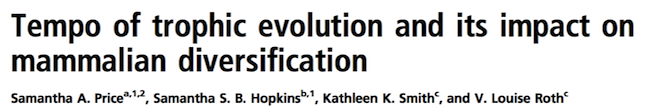
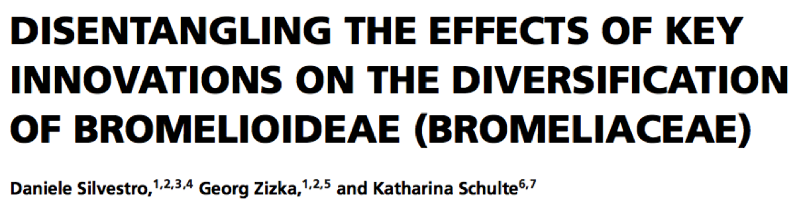
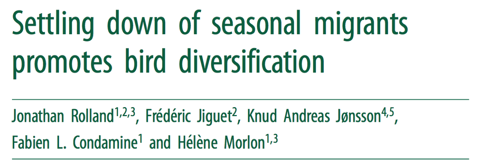
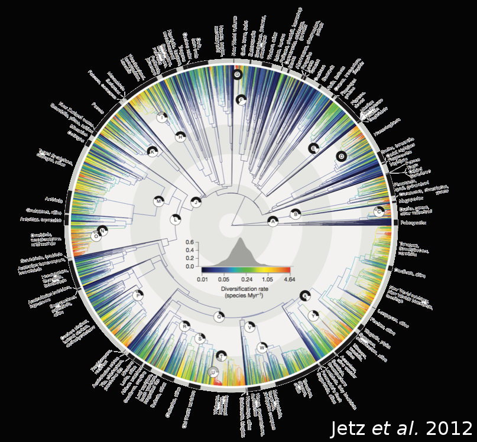
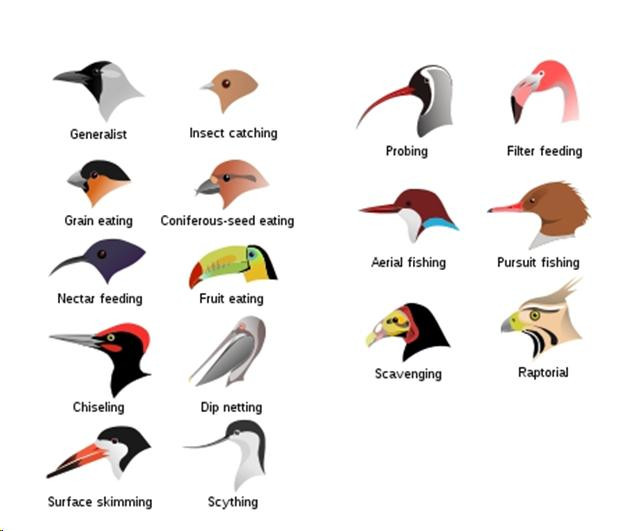
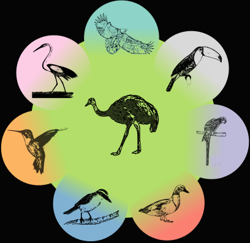
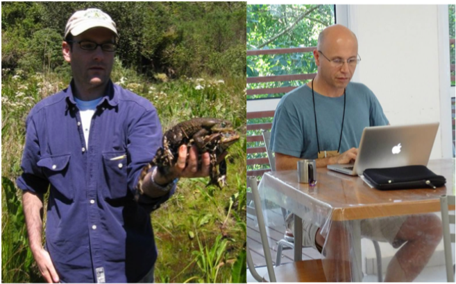

Omnivory as a macroevolutionary sink
Lower diversification of and higher transition rates into omnivorous birds
Gustavo BURIN Daniel KISSLING Paulo GUIMARAES Cagan SEKERCIOGLU Tiago QUENTAL
Motivation and Aim



Trait-dependent diversification
Birds


Is there any relationship between diet and diversification rates in birds?
Data - Phylogeny
Methods - Diversification model
Trait-dependent diversification
MuSSE - Multiple-State Speciation and Extinction
- Bayesian implementation
- (https://github.com/dsilvestro/mcmc-diversitree/)
Analysis
- Comprehensive dietary database (Sekercioglu et al. 2004, updated with del Hoyo et al., 2013)
- 9 states: Carnivores, Frugivores, Granivores, Herbivores, Insectivores, Nectarivores, Omnivores, Piscivores, Scavengers
- 200 trees (100 from each backbone)
- Total of 93 parameters
Results - Diversification rates
Net Diversification rates
Speciation/Extinction rates
Rate differences
Transition rates
Ecological scenario for macroevolutionary patterns
Omnivore niche
Non-omnivore niche
Inter-guild competition
Times of stable and/or predictable resources
Times of stable and/or predictable resources
Times of stable and/or predictable resources
Times of unstable and/or unpredictable resources
Times of unstable and/or unpredictable resources
Times of unstable and/or unpredictable resources

Take home messages
- Omnivores: lower net diversification
- Higher extinction
- Lower speciation
- High transition into omnivores
Acknowledgements

Acknowledgements
